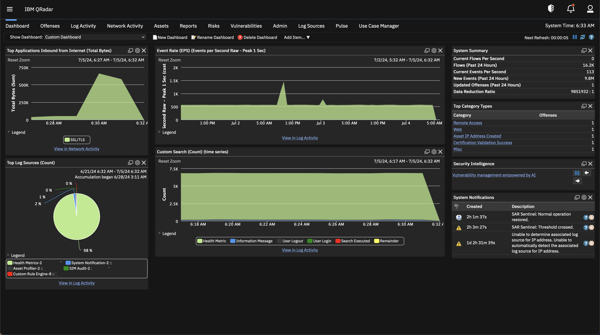

Overview
IBM QRadar is IBM’s threat detection and response family, made up of QRadar SIEM, QRadar SOAR for incident response workflows, and QRadar EDR for endpoint protection.
QRadar SIEM centralizes security data for real-time detection and compliance reporting. It includes user behavior analytics (UBA) built on data already in the SIEM, native support for open-source Sigma rules, network detection and response (NDR) that analyzes network activity in real time, and a data collector for ingesting telemetry. IBM cites 700 prebuilt integrations and partner extensions.
Since the sale of QRadar SaaS to Palo Alto Networks, IBM’s QRadar SIEM offering is deployed on premises as hardware or virtual appliances, or consumed through IBM X-Force Threat Management managed services. IBM licenses it either by events per second and flows per minute or by the number of managed virtual servers, on subscription or perpetual terms.
Key Features
User Behavior Analytics
Baselines employee behavior to surface insider threats and risky users.
Sigma Rules
Native support for thousands of open-source Sigma detection rules.
Network Detection and Response
Real-time analysis of network activity alongside log data.
Integrations
IBM cites 700 prebuilt integrations and partner extensions.
QRadar SOAR
Automates and orchestrates incident response workflows.
QRadar EDR
Endpoint protection using machine learning and behavioral analytics.
Pros & Cons
Advantages
- Two licensing models: EPS/FPM or managed virtual servers with unlimited log events
- Perpetual licenses available for on-premises deployments
- Full control of data with on-premises appliances
- Native Sigma rule support
- IBM states it was named a Leader in the 2024 Gartner Magic Quadrant for SIEM for the 14th time
Disadvantages
- IBM no longer offers QRadar as SaaS; cloud-first buyers are pointed to Palo Alto Networks’ Cortex XSIAM
- Prices are not published
- On-premises appliances must be sized, hosted and maintained by the customer
- Evaluation is through demos rather than a self-serve trial
Pricing
Pricing is quote-based. IBM publishes the licensing models, not the prices:
Usage Model
Based on events per second (EPS) and flows per minute (FPM); available for hardware and virtual appliances.
Enterprise Model
Based on the number of managed virtual servers (MVS), with network behavior and unlimited log events.
License Terms
Subscription or perpetual licensing for on-premises offerings.
Subscription and Support
Renewed annually; includes new versions, fixes and 24x7x365 technical support.
IBM notes that prices vary by country and exclude taxes. A managed option is available through IBM X-Force Threat Management Services.
Recommended Certifications
IBM offers QRadar SIEM V7.5 certifications for administrators and analysts. Check IBM Training for current exam availability.

IBM Certified Administrator – Security QRadar SIEM V7.5
Configuration, tuning and troubleshooting of on-premises QRadar SIEM.

IBM Certified Analyst – Security QRadar SIEM V7.5
Investigating offenses and analyzing security events in QRadar SIEM.
Get Started with Certification
Official training and certification resources:
Visit Certification Portal →Best Use Cases
Best For:
- On-premises SOCs: organizations that keep security data in their own data centers
- Existing QRadar customers: teams continuing on QRadar on-premises
- Regulated industries: compliance reporting with local data control
- Large log volumes: MVS licensing with unlimited log events
May Not Be Ideal For:
- Buyers who want a SaaS SIEM from IBM
- Small teams without staff to run SIEM appliances
Comparison with Competitors
- Palo Alto Networks Cortex XSIAM: the migration path for former QRadar SaaS customers.
- Splunk Enterprise Security: a widely used SIEM, now part of Cisco.
- Microsoft Sentinel: a cloud-native SIEM running in Azure, suited to Microsoft-centric estates.
Screenshots & Interface
Explore Ibm Qradar's interface:

Frequently Asked Questions
Is IBM QRadar discontinued?
No. IBM sold QRadar SaaS to Palo Alto Networks in 2024, but continues to sell and support QRadar SIEM on-premises, along with QRadar SOAR and QRadar EDR.
What happens to QRadar SaaS customers?
According to Palo Alto Networks, they continue on their current deployment until they are ready to move to Cortex XSIAM.
How is QRadar SIEM licensed?
By EPS and FPM (usage model) or by managed virtual servers (enterprise model), on subscription or perpetual terms.
How is QRadar SIEM deployed?
As hardware or virtual appliances on premises, or as a managed service through IBM X-Force.
Does QRadar support Sigma rules?
Yes. IBM highlights native support for thousands of open-source Sigma rules.
Final Verdict
QRadar SIEM remains a mature choice for organizations that want to run their SIEM on premises, with flexible licensing and a broad integration catalog. Cloud-first buyers should note that IBM’s SaaS version now belongs to Palo Alto Networks.